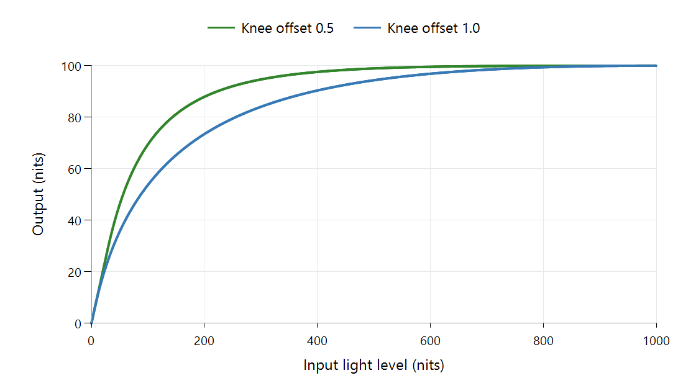

Tone Mapping Curve: BT.2390
BT.2390 is an ITU-R report about HDR television. The tone-mapping option named after it usually refers to its electrical–electrical transfer function, or EETF: a way of adapting a signal between different display ranges.
Its recognizable feature is a smooth roll-off. Lower values can follow an unchanged section before highlights bend toward the destination's limit.

libplacebo 7.360.1 brightness mapping, 1,000 → 100 nits, zero black levels. Offset 0.5 follows the report's knee convention; offset 1.0 is libplacebo's default. Calculation happens in PQ; axes show light levels.
Why two BT.2390 results can differ
The graph's two lines have the same endpoints but do not start reducing brightness at the same place. The earlier bend changes more of the picture to make room for highlights.
That is an implementation setting, not a change of video codec. Black-level assumptions also matter: the report's adaptation can account for a destination that cannot reproduce the source black level. This example isolates the highlight behavior by setting both black levels to zero.
The EETF should not be confused with an EOTF. An EOTF relates a signal to display light. Here, PQ helps perform a transformation between the source and destination signal ranges.
For an Emby playback comparison, record the target brightness and the actual mapper, not just “BT.2390.” The same label can hide a different knee offset. The approach is also relevant to HDR-to-HDR mapping, where both ends are HDR but the display still has a smaller range than the source.